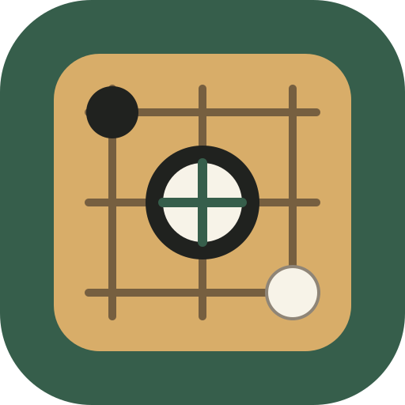
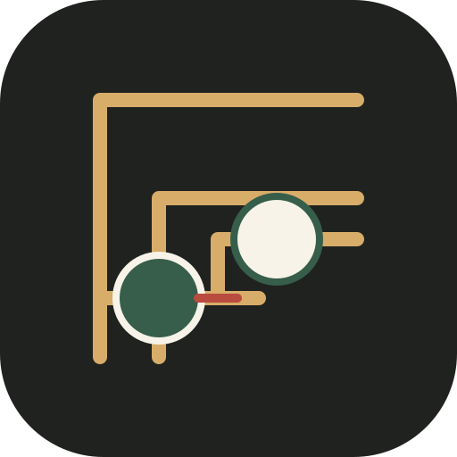
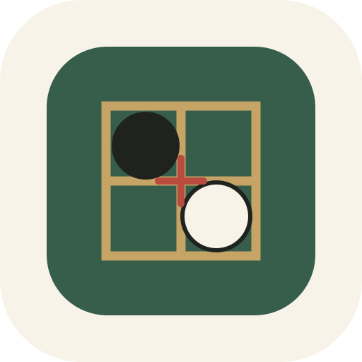
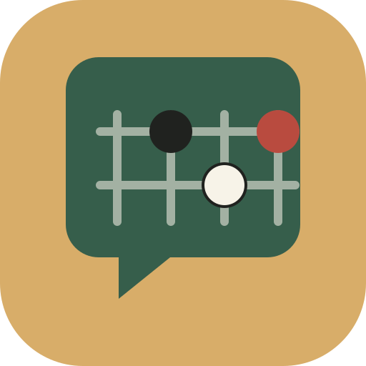
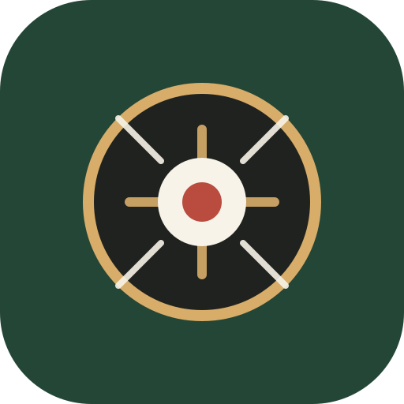

A · 交叉落子
option-a-intersection.svg五套均为轻量 SVG，无外部图片依赖。选定后可再将同一方案同步为 Web/PWA 图标和 Android 自适应图标。

option-a-intersection.svg
option-b-half-step.svg
option-c-seal.svg
option-d-dialogue.svg
option-e-inkstone.svg